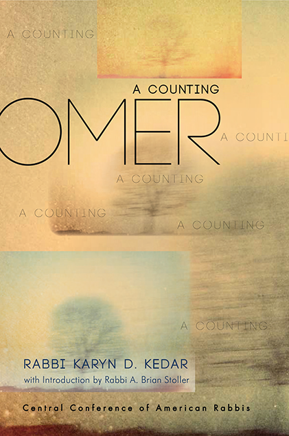

Omer:A CountingInspirational CardsSeven Weeks, Seven Principles to Spiritual AwarenessDaily contemplation and consideration enable us to focus our attention and heighten our awareness toward the importance and sacred energy of our lives. For forty-nine days, or seven weeks, we take on a discipline and an obligation to mindfully enter the day, to be aware of its potential power to matter, to make a difference, to make it count for something. I offer a set of forty-nine cards, divided into seven spiritual principles: Decide, Discern, Choose, Hope, Imagine, Courage, and Pray. Each day its own thought, each week its own theme, to help illuminate your days. We count, and in doing so, make an accounting of who we are and who we want to be. —Rabbi Karyn Kedar Omer:A CountingBy Rabbi Karyn Kedar A spiritual guide for a personal journey through the Omer toward meaningful and purposeful living. Beautiful and evocative readings for each of the 49 days, matched with the daily Omer blessing, offer a transformative path from Passover to Shavuot. Available at ccarpress.org, Amazon, and as an eBook. |